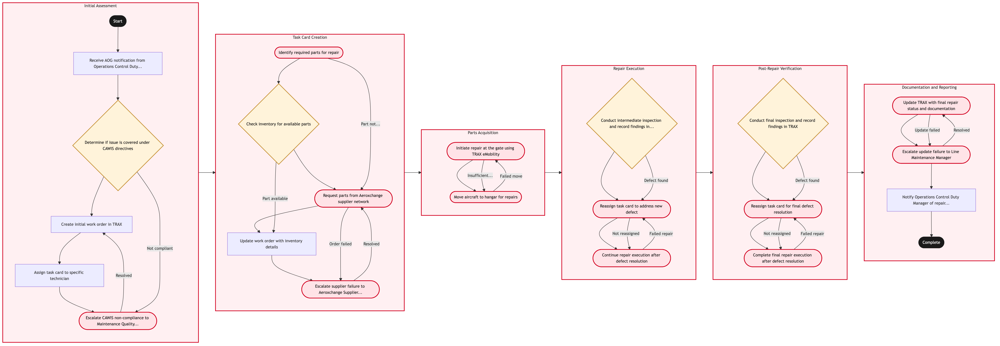

Updated 2026-08-21
AOG Response and Recovery
Process flow
Click to zoom

Process steps
▼
Phase 1 — Initial Assessment
5 steps
| Step | Activity | Role | System | Input | Output | KPI | Dec | Exc | Pain point |
|---|---|---|---|---|---|---|---|---|---|
| 1.1 | Receive AOG notification from Operations Control Duty Manager | YYZ Operations Control Duty Manager | TRAX eMobilityB | AOG alert with aircraft details | Notified Line Maintenance team | Time to receive and acknowledge AOG | N | N | Delays in receiving alerts can lead to missed critical repair windows. |
| 1.2 | Determine if issue is covered under CAWIS directives | Line Maintenance Engineer | Transport Canada CAWISC | AOG details from TRAX eMobility | CAWIS compliance status | Time to check CAWIS compliance | Y | N | Non-compliance with CAWIS can result in significant delays and fines. |
| 1.3 | Create initial work order in TRAX | Line Maintenance Engineer | TRAXB | AOG details and CAWIS compliance status | Work order created | Time to create work order | N | N | Delays in creating work orders can delay the entire repair process. |
| 1.4 | Assign task card to specific technician | Line Maintenance Manager | TRAXB | Work order details | Assigned technician | Time to assign task card | N | N | Incorrect or delayed assignment can lead to inefficiencies in repair execution. |
| 1.5 | Escalate CAWIS non-compliance to Maintenance Quality Assurance (MQA) | Line Maintenance Manager | TRAXB | CAWIS compliance status | Escalation ticket created | Time to escalate non-compliance | N | Y | Non-compliance must be addressed promptly to avoid regulatory penalties. |
▼
Phase 2 — Task Card Creation
5 steps
| Step | Activity | Role | System | Input | Output | KPI | Dec | Exc | Pain point |
|---|---|---|---|---|---|---|---|---|---|
| 2.1 | Identify required parts for repair | Line Maintenance Engineer | TRAXB | Task card details | Parts list | Time to identify parts | N | Y | Missing or incorrect parts can delay the repair process. |
| 2.2 | Check inventory for available parts | Aeroxchange Parts Coordinator | TRAXB | Parts list | Inventory status | Time to check inventory | Y | N | Insufficient inventory can lead to delays in obtaining required parts. |
| 2.3 | Request parts from Aeroxchange supplier network | Aeroxchange Parts Coordinator | AeroxchangeC | Parts list and inventory status | Supplier order confirmation | Time to request parts | N | Y | Delays in supplier response can significantly impact repair timelines. |
| 2.4 | Update work order with inventory details | Line Maintenance Engineer | TRAXB | Inventory status | Updated work order | Time to update work order | N | N | Incorrect inventory updates can lead to errors in repair planning. |
| 2.5 | Escalate supplier failure to Aeroxchange Supplier Relations Manager | Aeroxchange Supplier Relations Manager | AeroxchangeC | Supplier order confirmation | Escalation ticket created | Time to escalate supplier failure | N | Y | Supplier failures can disrupt critical repair timelines. |
▼
Phase 3 — Parts Acquisition
2 steps
| Step | Activity | Role | System | Input | Output | KPI | Dec | Exc | Pain point |
|---|---|---|---|---|---|---|---|---|---|
| 3.1 | Initiate repair at the gate using TRAX eMobility | Line Maintenance Technician | TRAX eMobilityB | Task card and parts availability | Repair progress updates | Time to start repairs | N | Y | Gate space constraints can limit repair options. |
| 3.2 | Move aircraft to hangar for repairs | Line Maintenance Control | TRAXB | Repair progress updates | Aircraft moved to hangar | Time to move aircraft | N | Y | Delays in moving aircraft can extend repair timelines. |
▼
Phase 4 — Repair Execution
3 steps
| Step | Activity | Role | System | Input | Output | KPI | Dec | Exc | Pain point |
|---|---|---|---|---|---|---|---|---|---|
| 4.1 | Conduct intermediate inspection and record findings in TRAX | Line Maintenance Engineer | TRAXB | Repair progress updates | Inspection report | Time to conduct inspection | Y | N | Missed inspections can lead to undetected issues. |
| 4.2 | Reassign task card to address new defect | Line Maintenance Manager | TRAXB | Inspection report | Reassigned technician | Time to reassign task card | N | Y | Incorrect reassignments can lead to inefficient repair cycles. |
| 4.3 | Continue repair execution after defect resolution | Line Maintenance Technician | TRAX eMobilityB | Reassigned task card and parts availability | Repair completion status | Time to complete repairs | N | Y | Delays in repair execution can extend aircraft downtime. |
▼
Phase 5 — Post-Repair Verification
3 steps
| Step | Activity | Role | System | Input | Output | KPI | Dec | Exc | Pain point |
|---|---|---|---|---|---|---|---|---|---|
| 5.1 | Conduct final inspection and record findings in TRAX | Line Maintenance Engineer | TRAXB | Repair completion status | Final inspection report | Time to conduct final inspection | Y | N | Missed inspections can lead to undetected issues. |
| 5.2 | Reassign task card for final defect resolution | Line Maintenance Manager | TRAXB | Final inspection report | Reassigned technician | Time to reassign task card | N | Y | Incorrect reassignments can lead to inefficient repair cycles. |
| 5.3 | Complete final repair execution after defect resolution | Line Maintenance Technician | TRAX eMobilityB | Reassigned task card and parts availability | Final repair completion status | Time to complete final repairs | N | Y | Delays in final repair execution can extend aircraft downtime. |
▼
Phase 6 — Documentation and Reporting
3 steps
| Step | Activity | Role | System | Input | Output | KPI | Dec | Exc | Pain point |
|---|---|---|---|---|---|---|---|---|---|
| 6.1 | Update TRAX with final repair status and documentation | Line Maintenance Engineer | TRAXB | Final repair completion status | Updated work order with final report | Time to update TRAX | N | Y | Incorrect updates can lead to inaccurate records. |
| 6.2 | Escalate update failure to Line Maintenance Manager | Line Maintenance Manager | TRAXB | Update status | Escalation ticket created | Time to escalate update failure | N | Y | Failed updates can disrupt maintenance records. |
| 6.3 | Notify Operations Control Duty Manager of repair completion | Line Maintenance Engineer | TRAX eMobilityB | Final repair status | Completion notification sent | Time to notify Operations Control | N | N | Delays in notifications can lead to operational disruptions. |
Swim lanes
YYZ Operations Control Duty Manager1.1
Line Maintenance Engineer1.2 1.3 2.1 2.4 4.1 5.1 6.1 6.3
Line Maintenance Manager1.4 1.5 4.2 5.2 6.2
Aeroxchange Parts Coordinator2.2 2.3
Aeroxchange Supplier Relations Manager2.5
Line Maintenance Technician3.1 4.3 5.3
Line Maintenance Control3.2
Systems touched
TRAX eMobilityBTransport Canada CAWISCTRAXBAeroxchangeC
Key performance indicators
- Average time to receive and acknowledge AOG: 15 minutes
- Time to create work order: 30 minutes
- Time to assign task card: 5 minutes
- Time to identify parts: 20 minutes
- Time to start repairs: 10 minutes
Risks and control points
- Inaccurate CAWIS compliance checks leading to regulatory penalties
- Delays in obtaining required parts due to supplier issues
- Insufficient gate space affecting repair execution
- Missed inspections leading to undetected defects
- Failed updates to TRAX disrupting maintenance records
Air Canada Process Wiki — process and systems reference compiled from public sources
for IT Application Management and User Support pre-sales discovery.
Built 2026-08-21. Every system carries an evidence tier: tier C is an industry pattern and tier U is an open
question, and neither should be asserted as fact about Air Canada without confirmation in discovery.
Not affiliated with or endorsed by Air Canada. Air Canada, Aeroplan and Altitude are trademarks of Air Canada.